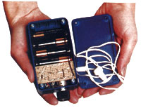

Most of us will no doubt agree that hearing and sight are our two most precious senses . . . so when something goes awry with either, our lives are deeply affected. Indeed, if it becomes severe enough, an impairment of sight or hearing can become a serious disability. You might be surprised to learn, though, that hearing impairment is by far the more prevalent of the two. There are 16,000,000 people in the U.S. alone with admitted deafness . . . and an estimated 16,000,000 more who have a hearing disorder but are unaware of the problem!
In many cases, the hearing impaired can be helped by a device that makes sound louder: a hearing aid. Hearing aids are, in the most general sense, electronic amplifiers that boost sound level to the point where people who are hard of hearing can understand what's being said. It's estimated that about half of all people suffering hearing disorders can gain at least some relief through the use of a hearing aid.
Unfortunately, such devices don't come cheap: It's not unheard-of for certain designs to run into the thousands of dollars. To many of you, that may seem like an awful lot of money to pay for a small amplifier. Well, MOTHER and I agree-to a point-so we've gotten together to show you how to assemble our "volks" hearing aid . . . one that can be built almost entirely from parts available at a local Radio Shack for less than $30. Before you get involved in this project, though, y ou need to know if you can actually benefit from using an amplifier.
The manner in which humans perceive sound is a marvelous example of natural engineering. The ear is divided into three areas: the outer, the middle, and the inner ear. The outer ear funnels sound to the drum, a vibrating membrane that transforms those sound pressures into mechanical movement. Attached to the eardrum itself, in the middle ear, is an extremely intricate linkage of three tiny bones that acts as a lever-similar to a piston-to stimulate the hair endings of the cochlea. Inside the cochlea, deep in the inner ear, that mechanical sound is changed into electrical impulses that are then transmitted to the brain through the auditory nerves.
Damage or disease in any of the three areas of the ear can result in hearing loss. There are four basic types of disorders. The first, conductive hearing loss, is caused by disease or obstruction in the outer or middle ear. Conductive hearing impairment usually isn't severe and can often be corrected through surgery or medical treatment.
A sensorineural hearing disorder is caused primarily by damage to the sensory hair cells of the cochlea or to the nerves of the inner ear. The disability may range from mild to profound. Sensorineural damage is usually the result of prolonged exposure to highintensity sounds, such as explosions or factory noises. It's a progressive disease-the degeneration is proportional to the length of exposure-and the impairment generally affects a particular sound frequency range. When losses are greater in some frequency ranges than in others, distortion often results.
The other two types of hearing disorders are mixed hearing loss, caused by a combination of ailments, and central hearing loss, caused by auditory-nerve damage. The last is the most severe, and, as yet, there seems to be little hope for an absolute cure.
Of the four types of hearing loss, the first two can be partially or totally corrected by sound amplification. Persons with conductive hearing loss, particularly that which is brought on by aging, are the most likely to benefit from the use of hearing aids.
Because of the different types and severities of hearing loss, there's more to constructing an effective hearing aid than simply building an electronic amplifier. Tonal quality and volume range are just two of the important factors that must be considered.
To complicate matters, the ear isn't a linear receiving device to begin with; that is, it doesn't perceive all frequencies equally well. Instead, it's more sensitive to some than it is to others, and that sensitivity shifts as the intensity of the sound increases.
Fig. 1 tells the story. The lowest, and most contoured, of the lines represents the threshold .of hearing-the level at which sounds are barely audible. Notice how the line dips as the frequency nears 3,000 cycles per second (3,000 Hz, in technical terms). This means that we can hear sounds at 3,000 Hz that are about one-tenth as loud as the faintest 1,000Hz sound we're able to pick out (if this seems confusing, remember that hertz are a measure of frequency, not volume). At 10,000 Hz, though, the sound level must be ten times louder than it is at 1,000 Hz in order for us to hear it-or 100 times greater than at a sensitivity level of 3,000 Hz!
As a sound becomes louder, however, our ears begin to interpret all frequencies equally. That's why you notice a pronounced increase in the dynamic range of music when you turn your stereo up. What you're doing, in effect, is equalizing the loudness level to match your ear's frequency response curve.
And spectral sensitivity varies with the individual. Women, for instance, can generally hear higher frequencies than men can and are thus able to hear sounds men can't. Age also brings about changes in hearing.
Consequently, to do an acceptable job of amplifying sound for the hearing impaired, a hearing aid must be able to cope with the wide range of frequencies, intensities, and sensitivities encountered in everyday life.
The amplifier I'm going to tell you how to build has been designed with these criteria in mind. For example, it incorporates a volume control that spans a 10-to-1 range. More important, however, is its tonal quality. The device is heavily filtered to attenuate-but not completely eliminate-those annoying sounds so many hearing aids amplify. Far too many commercial units amplify all sounds equally, even those that you'd rather not hear. The background din at a cocktail party, for instance, may come through loud and clear enough to actually drown out the immediate conversation. By adding a tone control to the hearing aid and adjusting its frequency contour with the volume control setting, much of this unwanted babble can be filtered out. (Appropriately enough, this feature is called a clarity control.)
Before I go any further, let me point out, once again, that this hearing aid won't solve every hearing loss problem. Although it has quite a bit of amplification and provides for tonal control, it obviously isn't tailored to suit an individual's specific hearing problem. Much of what you pay for when buying a commercial hearing aid is the testing and custom design that match the device to the specific hearing problem that you have. Consequently, our amplifier lacks the refinement of custom hearing aids.
On the other hand, though, MOM's hearing aid is likely to cost at least several hundred dollars less than a commercial model. So if you have a mild impairment, and if your doctor agrees that a hearing aid is likely to help, you should consider giving our design a try.
At the time that this project was conceived (thanks to the suggestion of reader John S. Coe, who has built an aid of his own design), we decided that it would be next to impossible to make a concealed hearing aid, such as a behind-the-ear or eyeglass-mounted model. Even if a person were able to master the miniature-construction skills required, procuring the necessary tiny parts would be difficult indeed. Therefore, we decided to concentrate on a model that has most of its works in a compact plastic box . . . one that would fit into a pocket.
Duplicating our hearing aid is fairly simple; the device shouldn't take more than a couple of hours to construct once you've rounded up the parts. In the interest of simplicity, we decided to incorporate the amplifier part of the unit into a printed circuit board. You can make your own from the accompanying illustration or-easier still-purchase one from Danocinths (see the parts list for ordering information). Once you've got an etched and drilled board, just insert the components according to the parts layout, and solder them in place. (Be sure to pay attention to semiconductor orientation and polarity!)
There are four essential components that are not included on the circuit board: a microphone, an earphone jack, the clarity control, and a battery holder. These pieces must be mounted inside the plastic case and wired to the printed circuit board. The directions that follow will tell you how to proceed. When using them, hold the plastic case in your hand so that the long dimension is vertical and you're looking into the cavity.
The microphone goes in a hole in the upper right-hand corner of the bottom of the case. For best results, drill the hole to about 11/32" so that the 3/8"-diameter microphone will fit snugly in place. Push the microphone into the hole-you may have to file the opening a little larger-until it protrudes slightly beyond the outside of the case, then secure it with glue.
Mount the clarity control in a 5/8" hole toward the left-hand side of the top oh the case. Next, the earphone jack should be positioned toward the top of the left side panel. These two devices will be secured with washers and nuts, but go ahead and attach their wires before you snug them up.
The last external item to be attached to the case is the battery holder. Unfortunately, a Radio Shack 270-397 battery holder doesn't quite fit into that supplier's 270-221 case, so you'll have to modify the holder slightly. Begin by discarding the cover and removing the contacts by pulling them straight up. Then remove the sides of the holder by cutting along the edge with a hacksaw. If all goes well, the modified unit should slip right into the lower part of the case-leaving enough clearance for the battery contacts to be inserted between the case walls and the holder. Do any final trimming that's necessary, align the holder, and glue it to the bottom of the case.
Finally, solder the wires connecting the external parts to the circuit board, and nestle the board into the upper portion of the case. A few small drops of isocyanate glue (commonly called "super," "crazy," etc.), placed against the sidewall ribs, will secure the board. Finally, insert the batteries and replace the cover to complete your hearing aid.
Using the hearing aid is as simple as plugging in the earphone and turning the unit on by rotating the clarity control. Proper adjustment of the control depends on several factors, not the least of which is the severity of your particular hearing problem. Background noises, air temperature, and your physical awareness will also make a difference. The best suggestion I can offer is to adjust the hearing aid to satisfy your immediate needsbeing aware that they may change from moment to moment.
If you find the aid isn't providing enough volume, you can increase its capability by switching RI from 1k ohms to 470 ohms. Doing this, unfortunately, will also introduce some sound distortion, but it shouldn't be ter ribly objectionable. Should the gain provided by this swap prove insufficient, I suggest that you see a hearing professional about a custom design.
THE MOTHER EARTH NEWS neither states nor implies that it's qualified to give medical advice-only a licensed professional is allowed to do that. If you suspect that you have a hearing problem, see your doctor. Then, should your physician agree that an amplification device may help you, you might well want to consider saving several hundred dollars by building the hearing aid we've described here. Remember, though, no matter what kind of hearing aid you use, the device isn't intended to be a cure-all . . . each person's hearing impairment will respond differently to an amplifier.
Hearing loss can be brought on by many different things, but the most common cause is repeated exposure to high-intensity sounds. Sound levels are measured in units called decibels (db), and human hearing spans a range of about 140 db. (To put these numbers in perspective, a whisper at five feet is 0 db, a jackhammer at two feet is about 90 db, jet aircraft noise can be as high as 120 db, and disco music often exceeds 130 db.)
Sensorineural damage begins at about 85 db. Constant--or even periodic-exposure to sound above this level harms the hair cells of the inner ear and thus causes hearing loss. The disease is progressive (the degree of degeneration is proportional to the length of exposure) and more or less irreversible.
It's interesting to note that though we have a very limited dynamic range at low frequenciesmost of us can't hear any sound below 40 Hz-the destructive power of such frequencies is great. Many discos were famous, at one time, for bodyvibrating sounds that emanated from subwoofer speakers mounted below the floor-unheard sounds that exceeded 130 db and were thus capable of causing permanent hearing damage. In most cases, however, we can physically feel sound vibrations when they reach 125 db, and 130 db sound is actually painful.
Doctors warn those who must work around high-intensity noises to take precautions to preserve their hearing by wearing protective devices such as earplugs or ear covers.
Figure 1 The Effects of Sound Intensity and Frequency on Hearing Perception
Figure 2 Hearing Aid Schematic
Parts List
Parts Layout
|
 |
|
|